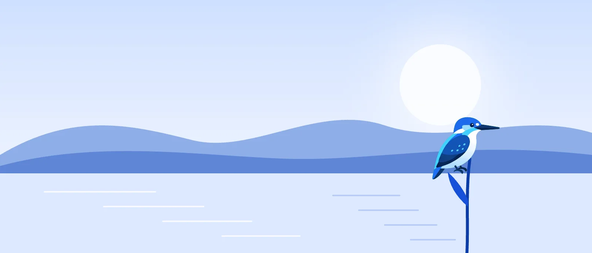
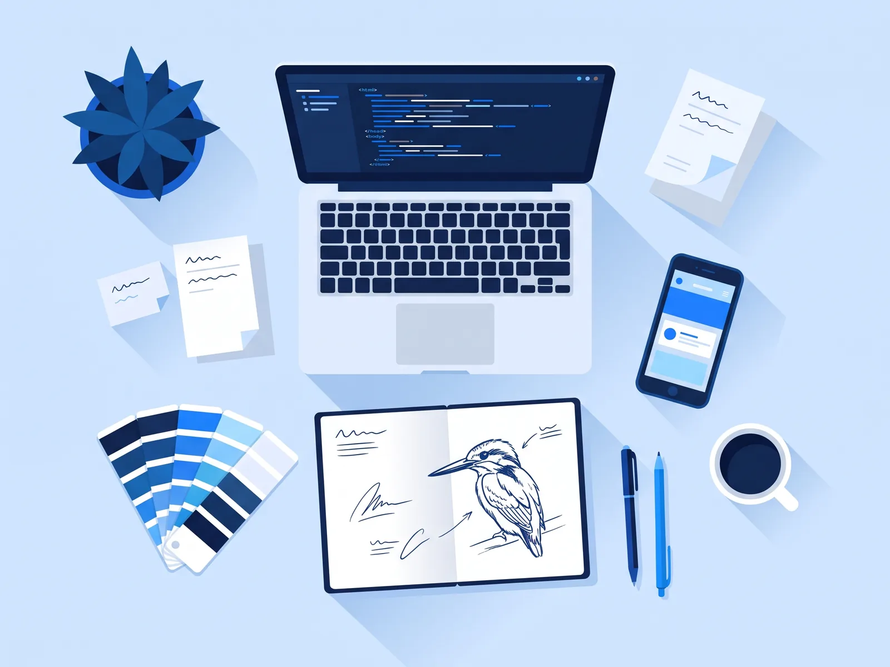
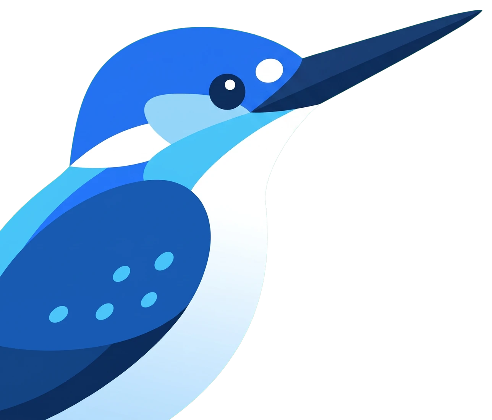

Il monte
Il part d'un roseau au ras de l'eau et finit tout en haut. Comme une marque qui commence petite.
Le studio
ZkilZ conçoit et développe des sites, des applications, des logiciels en ligne et des contenus pour les réseaux. Tout est fait au même endroit, pour que votre marque se ressemble partout.


Comment on travaille
Pas de transfert entre un designer, un développeur et une agence de contenus. La personne qui dessine votre maquette la développe, puis prépare vos reels. Rien ne se perd en route.

Qui vous répond
Du premier appel au suivi après la mise en ligne, vous parlez à quelqu'un qui connaît votre projet. Pas de ticket, pas de transfert d'un service à l'autre.
Pourquoi un martin-pêcheur
Il part d'un roseau au ras de l'eau et finit tout en haut. Comme une marque qui commence petite.

Il observe longtemps avant de plonger. On écoute et on maquette avant de développer.

Un geste précis, sans éclaboussure. Un site qui fait ce qu'on attend de lui, sans détour.
Dites ce que vous vendez et ce qui coince aujourd'hui. Le premier échange est gratuit, et vous repartez avec des pistes concrètes.